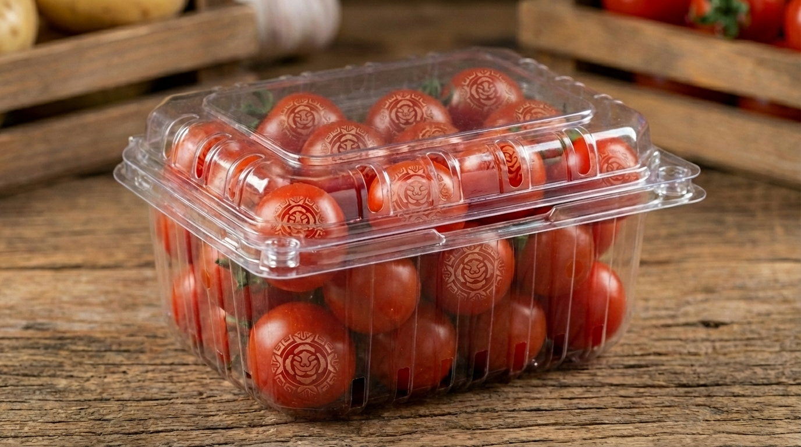
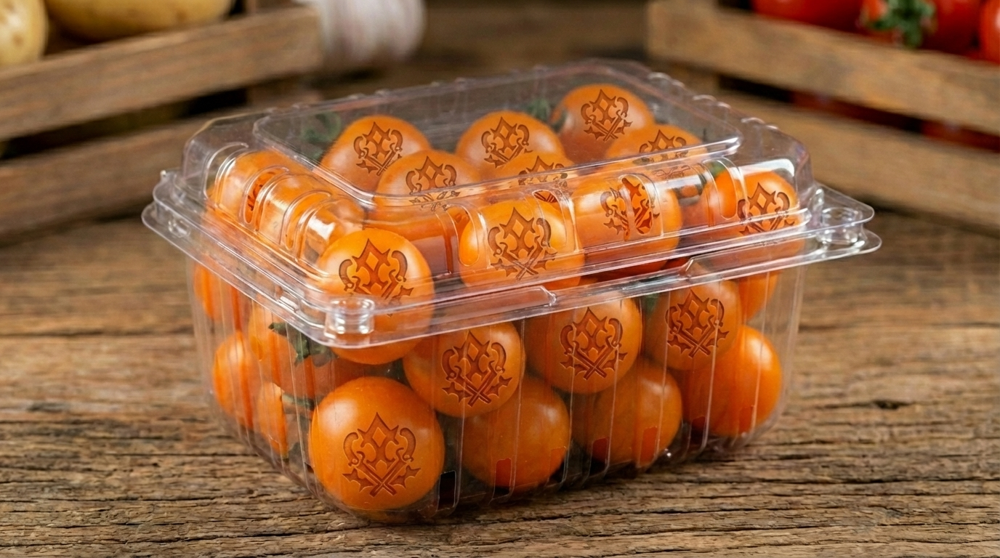
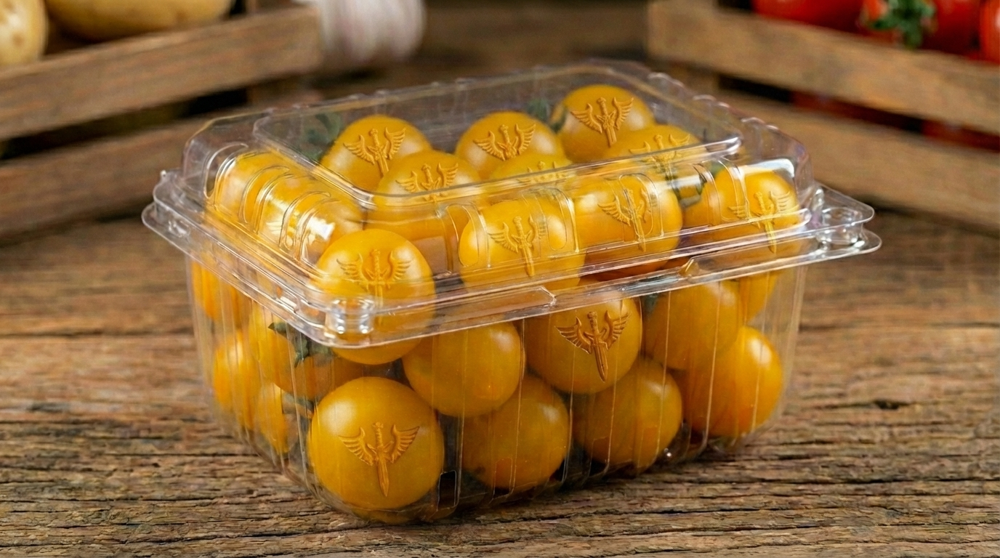
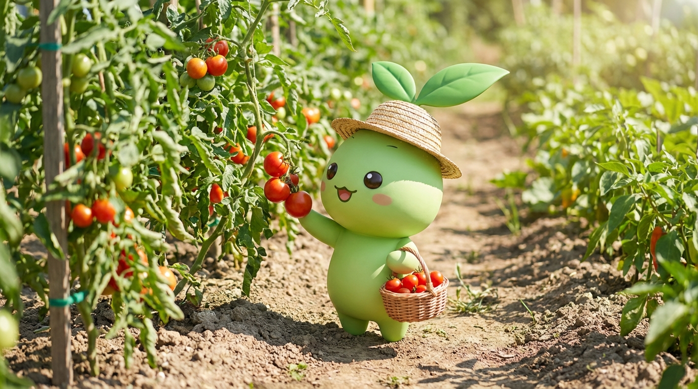

담양의 청년농부가 스마트팜으로 온도, 습도, 일조량을 관리하고
호박벌이 수정한 방울토마토만 골라 보내드립니다.
스마트팜에서 품종별 최적 환경을 따로 잡아 키웁니다

시그니처근이가 처음부터 밀어온 시그니처. 단단한 과육에 당도가 높아서, 한 번 맛보면 마트 방울토마토로 못 돌아갑니다.

요즘 빠진 맛요즘 근이가 푹 빠진 새 품종. 터지는 과즙에 단맛과 산미의 밸런스가 남다릅니다. 한 알이면 충분해요.

새로운 맛익숙한 맛에 지친 분을 위한 품종. 첫 맛은 낯설지만, 씹을수록 빠져드는 독특한 풍미가 있습니다.
감이 아닌 데이터로, 경험이 아닌 기술로 키웁니다

익은 토마토만 골라 정확한 타이밍에 수확합니다
청년농부 근이네 방울토마토, 재주문율 87%
솔직히 방울토마토가 거기서 거기지 했는데, 여기 거 먹고 마트 거가 밍밍하게 느껴지기 시작했어요. 남편이 이제 다른 데서 사지 말래요.
6살 딸이 원래 토마토를 입에도 안 댔거든요. 근데 여기 골드 방울토마토 하나 줬더니 "아빠 이거 포도맛이야" 하면서 한 봉지를 비웠습니다.
저희 레스토랑 파스타 소스를 이 토마토로 바꾸고 나서 손님들이 소스가 달라졌냐고 물어봅니다. 이제 2년째 납품받고 있어요.